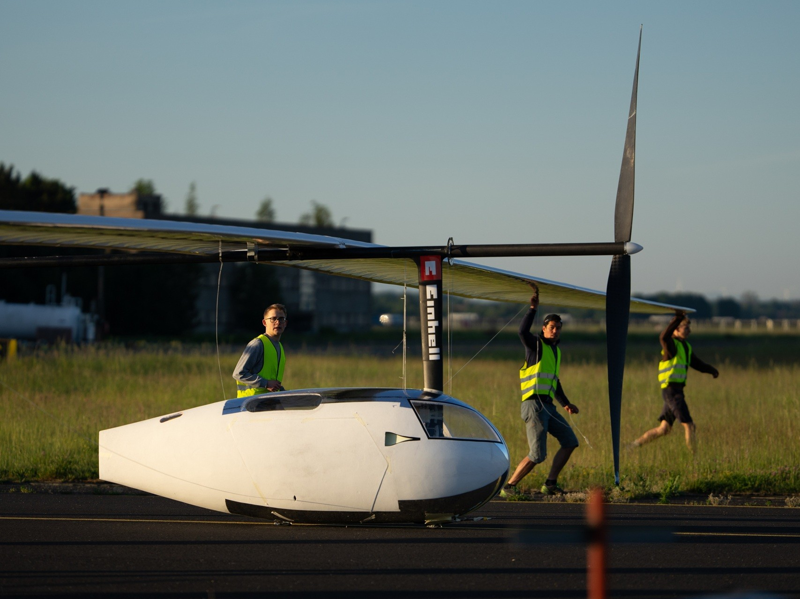
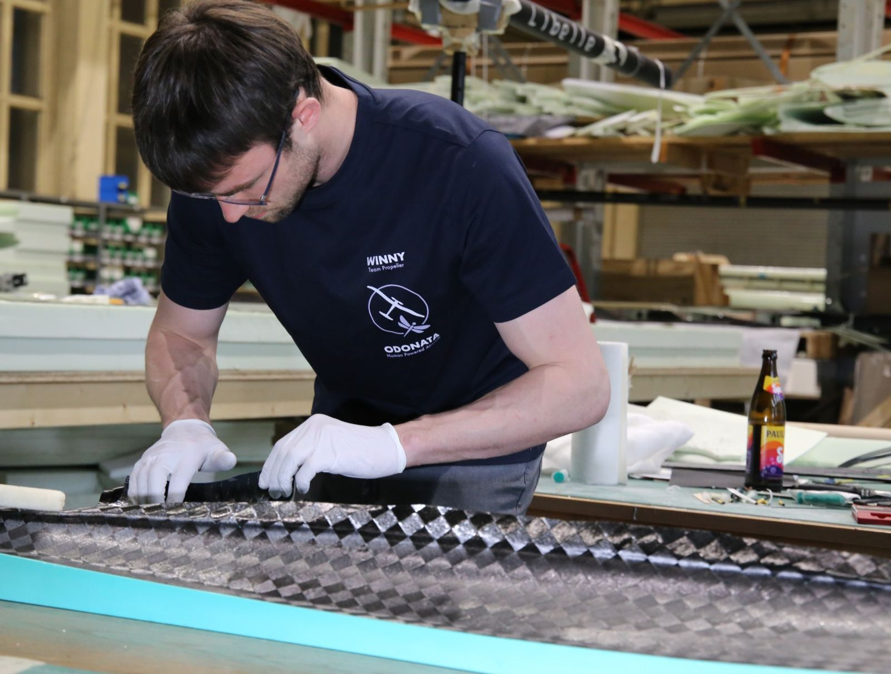
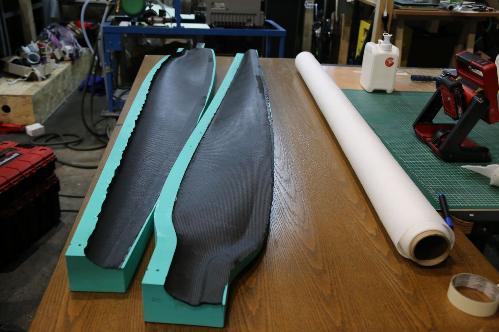

Projekt 01Project 01 · Human Powered Aircraft
Propeller für das Muskelkraftflugzeug LibellePropeller for the human-powered aircraft Libelle

AusgangslageStarting point
Die Libelle ist ein muskelkraftbetriebenes Flugzeug des Vereins Odonata e.V., in dem ich Mitglied bin und im Team Propeller mitarbeite. Ziel des Teams ist es, den aktuellen Langstrecken-Weltrekord für diese Klasse zu brechen. Der Pilot liefert dauerhaft nur wenige hundert Watt; jede Verlustquelle im Antrieb geht direkt von der erreichbaren Strecke ab. Der Propeller ist deshalb ein zentrales Bauteil des Gesamtsystems.
Libelle is a human-powered aircraft built by the association Odonata e.V., where I am a member of the propeller team. The team’s goal is to break the current distance world record in this class. The pilot can only sustain a few hundred watts, so every loss in the drivetrain is taken straight off the achievable distance. That makes the propeller a central part of the whole system.
VorgehenApproach
Die Entwicklung basiert auf einem parametrischen Geometriemodell, mit dem sich die Entwurfsparameter systematisch variieren lassen. Drei Werkzeuge greifen dabei ineinander:
Development is based on a parametric geometry model that allows the design parameters to be varied systematically. Three tools work together:
- JavaProp für schnelle Leistungsabschätzungen und die erste Blattauslegung,
- CAESES zur Parametrisierung und Optimierung der Geometrie,
- STAR-CCM+ für hochaufgelöste CFD-Simulationen auf Basis der URANS-Gleichungen.
- JavaProp for fast performance estimates and the initial blade design,
- CAESES for parameterisation and geometry optimisation,
- STAR-CCM+ for high-resolution CFD simulations based on the URANS equations.
Auslegung und Optimierung liefen iterativ: Die schnellen Verfahren grenzen ein, die CFD bestätigt und korrigiert.
Design and optimisation ran iteratively: the fast methods narrow things down, CFD confirms and corrects.
FertigungManufacturing
Die Blätter entstehen als Kohlefaser-Halbschalen in gefrästen Negativformen für Druck- und Saugseite. Zuschnitt, Lagenaufbau und Laminieren erfolgen von Hand.
The blades are made as carbon half-shells in machined female moulds for the pressure and suction side. Cutting, layup and laminating are done by hand.


Ziele der AuslegungDesign targets
- hoher aerodynamischer Wirkungsgrad im relevanten Betriebsbereich,
- robuste Leistung über den gesamten Flugzustand,
- strukturelle Umsetzung bei minimalem Gewicht: 800 g bei 3,5 m Durchmesser.
- high aerodynamic efficiency across the relevant operating range,
- robust performance throughout the flight envelope,
- a structure at minimum weight: 800 g at 3.5 m diameter.
Abb. 2 — Rechengeometrie aus der Optimierung: Propeller mit Rumpf und Träger, ohne Tragflügel und Leitwerk. Fig. 2 — Geometry used in the optimisation: propeller with fuselage and boom, without wing and tail.